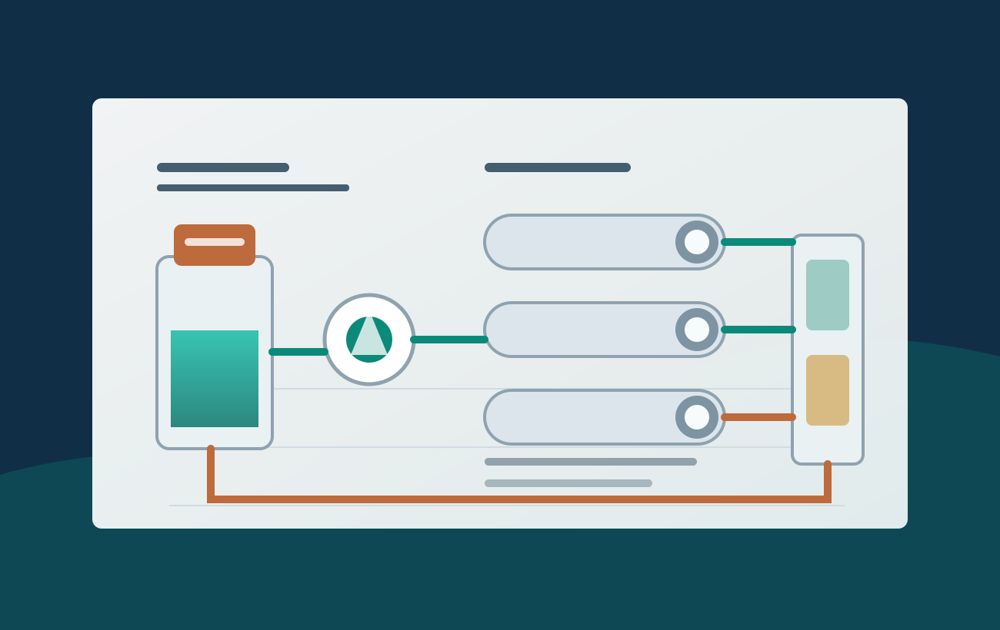

乳化油、切削液、清洗废水与机械加工废水
这类水样常见油水乳化、悬浮物高、COD 波动和后续生化负荷不稳定等问题。
- 目标
- 固液/油水前端分离，降低后续处理负荷。
- 关注
- 油含量、表面活性剂、温度、pH、乳化稳定性。
- 建议
- 先做小试确认通量衰减、清洗恢复和浓液处置方式。
Applications
应用页把客户的行业、进水问题、处理目标和所需资料串起来，帮助访客快速判断“我的项目能不能用”。
Scenario matrix
每个场景都避免直接承诺结果，先说明需要验证的变量和陶瓷膜可能发挥的价值。
这类水样常见油水乳化、悬浮物高、COD 波动和后续生化负荷不稳定等问题。
化工场景更关注材料耐受、清洗强度、连续运行稳定性和与前后端工艺的耦合。
在食品、生物发酵和酶制剂相关场景中，陶瓷膜可作为澄清、除菌或浓缩前处理单元。
当后端系统被颗粒、胶体、油类或波动水质影响时，陶瓷膜可作为更稳定的前端屏障。
新能源材料项目通常对颗粒分布、杂质控制和连续运行稳定性有更高要求。
高浊度水样需要重点验证预处理、膜通道、反洗策略和浓液排放路径。
Process fit
在高难度水处理项目里，单一设备很少独立解决所有问题。页面重点强调陶瓷膜与混凝、气浮、生化、RO、NF、蒸发等工艺的配合关系。

Data request
减少来回追问，让询盘更快进入技术判断。
具体工序、来水波动、是否间歇排放、是否有预处理。
SS、COD、油含量、盐分、pH、温度、粒径和特殊组分。
透过液要求、浓缩倍数、回用目标、后端系统保护目标。
处理量、运行制度、占地、接口、自动化和项目周期。